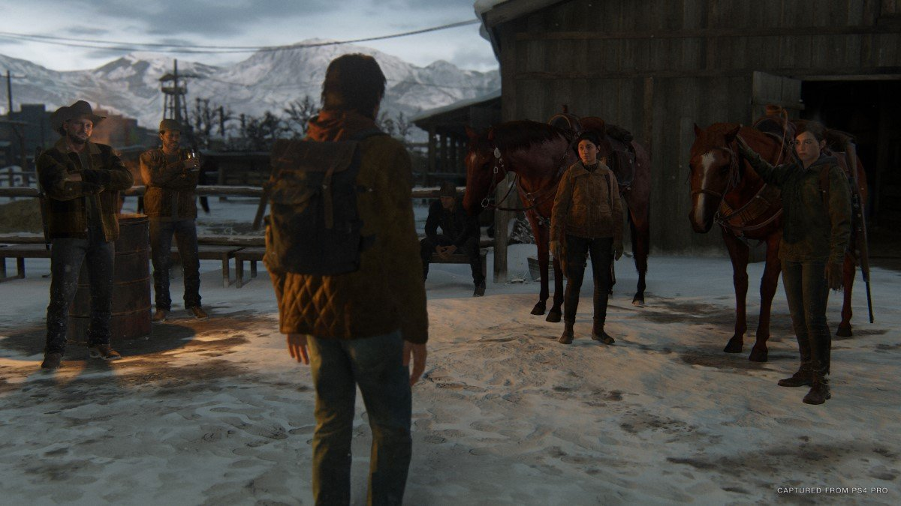
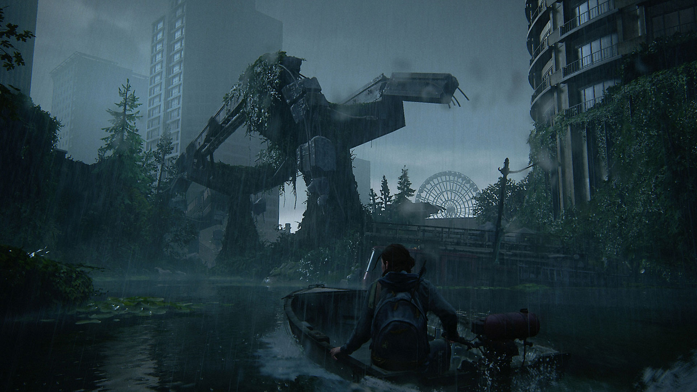
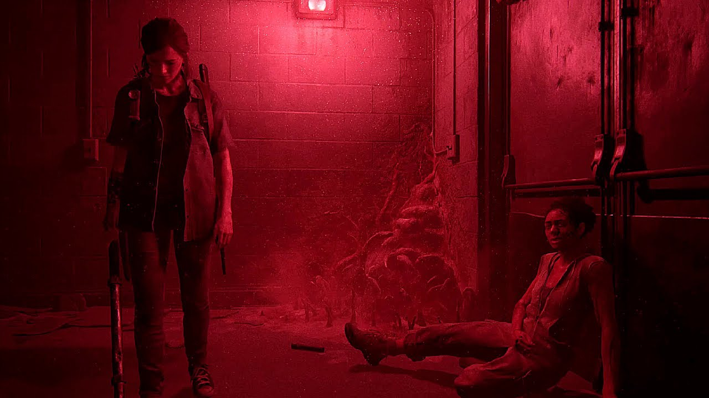
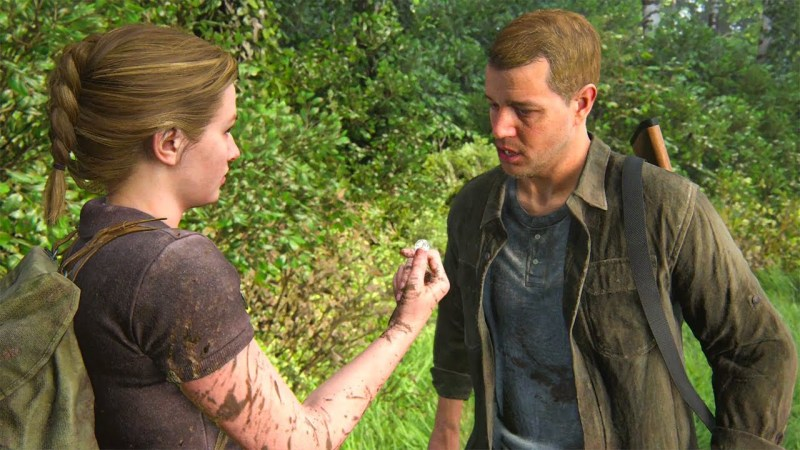
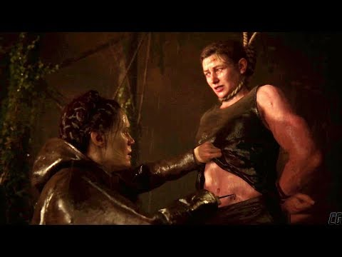
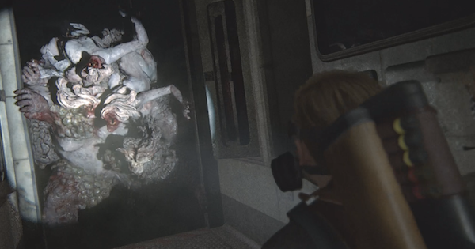
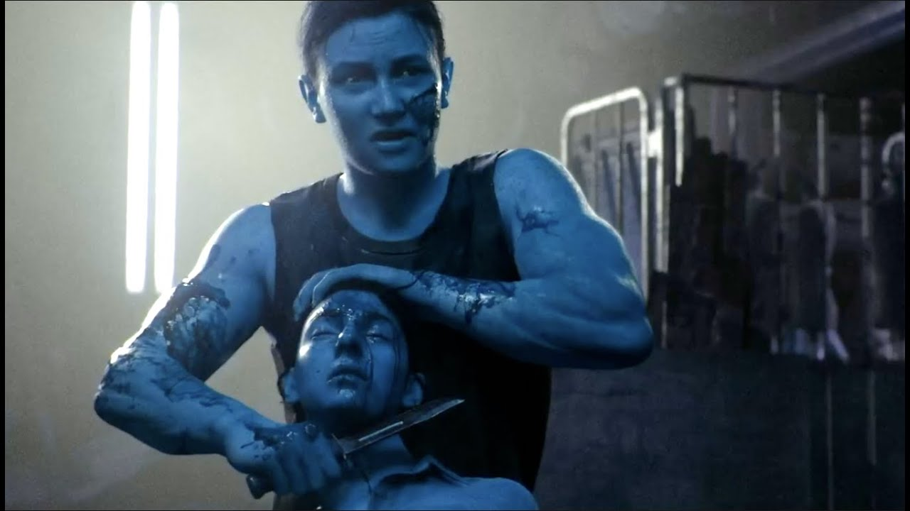
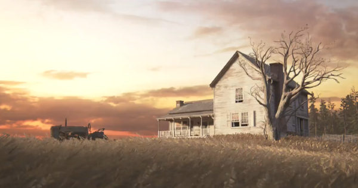
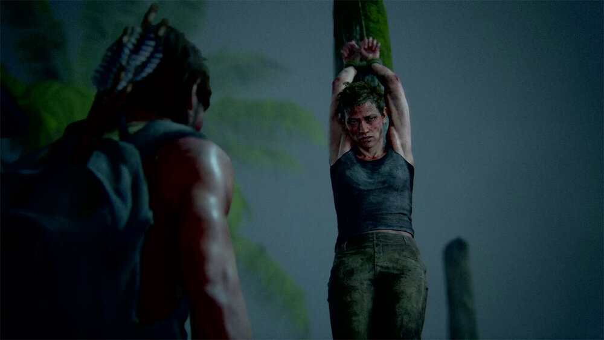
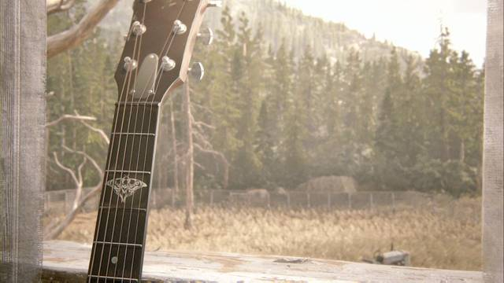

Home
Overall Plot
Characters
Gameplay_Visualisation
My Thoughts Overall
☰
Home
Overall Plot
Characters
Gameplay_Visualisation
My Thoughts Overall
☰
Five years after their dangerous journey across the post-pandemic United States, Ellie and Joel have settled down in Jackson, Wyoming. Living amongst a thriving community of survivors has allowed them peace and stability, despite the constant threat of the infected and other, more desperate survivors. When a violent event disrupts that peace, Ellie embarks on a relentless journey to carry out justice and find closure. As she hunts those responsible one by one, she is confronted with the devastating physical and emotional repercussions of her actions.
Ellie starts off the game going on patrol outside their shelter in Jackson with Dina. They battle infected and then a snow storm blows in.
They meet up with Jesse who tells them that Joel and Tommy didn’t check in from their patrol. And they split up to cover more ground and locate them quicker.
But while this is happening you are introduced to Abby’s character and her friends. We learn through her conversation about Mel’s pregancy with another character, Owen, that they’re in Jackson to find and kill someone.
Abby has a small playable part where we see her try to get to an observation building, the same building that Joel and Tommy are in, but we don’t know that yet. She gets close to the area, attracting a lot of infected zombies to her and is saved by Joel.
She, Joel and Tommy fight their way out and she leads them back to the manor her group is squatting in. Her group lets them in and they introduce themselves, after hearing Joel’s name the group reacts. Abby grabs a shotgun and blows a hole in Joel’s knee, crippling him. Tommy is knocked unconscious by Mel and the last we see of Abby’s small part is her holding a golf club, bracing to hit Joel with it.
Back to Ellie’s point of view, she finds clues of the two that lead her to the manor. Ellie breaks in, is immediately captured and subdued. In the first 2 hours of Ellie’s plot, she is forced to watch Abby kill her father figure Joel. She witnesses the ending of his long and drawn out murder. Abby and her crew leave and go back to Seattle. The group they’re apart of the WLF or wolves control the area and are in the midst of a battle over land with the Seraphites.
Ellie goes through a grieving sequence where she plans her revenge on Abby and her group of friends. Her and Dina are stopped by Maria, Tommy’s wife, who tells them that Tommy has left to get revenge on the group for Joel. Maria warns them but they don’t listen. Ellie and Dina set off after Abby’s group.

Seattle Day 1, we see Ellie and Dina in the Seattle area controlled by the WLF. Ellie gets captured but Dina helps get her out and they get a clue about another person from Abby’s group.
The clue leads them to the TV station, there the find everyone dead, killed by the Seraphites. After an encounter with infected and the WLF in a subway station, Dina finds out that Ellie is immune to the virus that turns people into infected.
Then Ellie finds out that Dina is pregnant with Jesse’s baby. Ellie gets upset and leaves her in a Theatre while she goes to find someone else that Tommy is also hunting. She runs into Jesse, who came to bring Tommy back to Jackson.
Shortly after their run in with the WLF, Jesse gets injured is brought back to the theatre.

Seattle Day 2, Ellie finds out about Nora, a member of Abby’s group that helped to kill Joel. She leaves Dina and Jesse at the theatre, she heads to where Tommy’s journal says she might be, in the hospital.
She sneaks her way into the hospital and finds Nora. Nora runs away from Ellie, refusing to give up Abby’s location to her. The chase leads them into a broken part of the hospital and Ellie throws them both down into the part below them.
It’s filled with spores, spores are another way that a person can get infected and since Ellie is immune, she remains fine but Nora gets infected. Ellie corners Nora in a hallway and demands she tell her where Abby is, Nora refuses and the player is prompted to hit her.
Ellie beats Nora until she tells her where Abby is, the Aquarium, but she breaks down after having just tortured Nora. Dina helps her clean off Nora’s blood and they fall asleep together.

Seattle Day 3, we see Ellie and Jesse talking about Dina’s pregnancy. Jesse agrees to stay behind and help protect Dina while she rests, and Ellie sets off to the Aquarium to kill Abby.
She gets there but the storm that was brewing rolls in and the seas are so rough she is thrown off her boat, she’s forced to swim to the Aquarium. She breaks in and comes across Mel and Owen arguing.
She tries to get them to tell her where Abby is but Owen rushes her and she shoots him. Mel then attacks her and she accidentally kills her, and because Mel is pregnant both her and the baby die.
Jesse and Tommy find her after the altercation, crying. Tommy, Jesse and Ellie are discussing whether they should leave Seattle or not. Tommy leaves the room to show them his ‘sorry’ gift for Maria, his wife.
Jesse and Ellie hear Tommy yell out in surprise, they rush out of them after him. Jesse bursts through the double doors first and is subsequently shot in the head, he dies instantly.
Ellie is then faced with the person she has been trying to find and kill for the last three days, Abby.

The true start to Abby’s part, begins with a flashback of her and her dad four years ago, just before Joel kills everyone at the Hospital.
This flashback shows us that Abby’s father is the doctor from the first game that was supposed to use Ellie to make a cure for the infection.

Seattle Day 1, Abby is off on a mission with Mel and Manny, who was also part of the group in Jackson, to go to the WLF headquarters (Washington Liberation Front) to meet their leader, Isaac.
Their ambushed by the Seraphites, whom they call Scars (all the Seraphites mark the faces with scars and the group is a religious cult). They make it to the WLF HQ, leave Mel to be checked because she is pregnant, while Abby and Manny meet Isaac.
Before meeting him they reunite with Nora who informs them that Owen has killed another member to “allegedly” protect a “Scar”. Isaac also informs them of such and forbids them from going after him.
Abby ignores this and leaves alone to find him at the Aquarium. Another flashback two years after the Hospital incident, how Owen and Abby find the Aquarium.
This flashback shows how obsessed Abby has become with finding Joel and training her body, and Owen’s desire to find the Fireflies again. Back in the present she gets captured by a small group of Seraphites and is strung up, about to be gutted.
Two men come over with a teenaged girl struggling between them. The woman in charge leaves Abby to break the girls arm with a hammer. An arrow flies out of the darkness and kills one of the men, the other is killed shortly after.
Abby takes the opportunity to grab the woman with her legs, the girl grabs the hammer and kills the woman. Abby is left to hang while a young boy emerges from the bush, he heads to the girl and she makes him cut Abby down.
We learn that the girl’s name is Yara and the young boy’s name is Lev. Infected starts closing on them from the darkness around them. Abby helps the kids escape to a safe area, helps Yara by putting her arm in a splint and leaves them in a trailer.
She finds Owen at the Aquarium and they sleep together.

Seattle Day 2, Abby leaves Owen before he wakes up after their night together. She heads back to find Yara and Lev. Yara is in need of immediate medical attention, so Abby takes her and Lev to the Aquarium.
There they meet Mel, who has just arrived from the WLF HQ and she informs them that Yara’s arm needs to be amputated. Abby and Lev must head out to the Hospital in Seattle to find the medication and tools need to fix Yara’s arm.
Lev tells Abby that they can get there quicker if the use the Seraphites bridges, bridges that connect to all the tall buildings in the sky. The Seraphites want Lev and Abby dead, Abby is obviously the enemy but they want to kill Lev because he is Transgender. They get away from the Seraphites and arrive at the Hospital.
Abby leaves Lev outside the Hospital because the WLF members who run the Hospital will kill him if they see him. She gets apprehended by the guards there under Isaac’s orders and Nora frees her. She directs Abby to the lower levels of the Hospital to hopefully find what she needs. The lower levels are swarmed with infected.
She battles a bunch of them and finds what she needs to help Yara. Her and Lev head back to the Aquarium, Yara’s arm is amputated.

Seattle Day 3, Yara and Lev have an argument over their mother. Mel and Abby also have an argument but Mel tells Abby that she Owen are headed to Santa Barbara to find the Fireflies and she won’t go if Abby comes too.
Yara and Abby try to find Lev in the Aquarium but Owen informs them that he has taken a boat out of the Marina. Yara tells Abby that Lev is going to try to convince their mother to come to Santa Barbara with them.
They set off to the islands that the Seraphites live on, leaving Mel and Owen behind. Abby gets side-tracked outside the Marina because a sniper has the pier locked down, there she finds Manny pinned down by his fire.
Manny tells her that Isaac plans to go use the storm as cover to get to the Seraphite’s island unseen and massacre them. Together they get to the sniper and chase him down, Manny gets killed and Abby knocks the sniper into the water.
The sniper is Tommy. She and Yara find a boat and takes off to the island. They get there but so do the WLF. They find Lev amid all the fighting, he’s accidentally killed their mother because she refused to leave and tried to kill him.
As the three are escaping, Yara is killed and they are surrounded by WLF and Isaac. Isaac orders the WLF to kill Abby and Lev but is shot which causes panic to ensue among the group. Abby and Lev escape in the chaos. The go back to the Aquarium to find Mel and Owen dead, Ellie’s map on the floor with the Theatre circled on it.
They set off to the Theatre to confront Ellie. We see how she ambushed Tommy, kills Jesse and then has Ellie at gun point. But then Ellie runs back inside, the player is still in Abby’s POV. We must fight Ellie. Abby and Ellie fight but Abby obviously wins but before she can kill her, Dina runs in with a knife and is quickly overpowered as well.
Abby puts a knife to Dina’s throat and Ellie pleads with her to spare her, “She’s pregnant” and Abby responds, “Good”. But Lev steps in and Abby lets Dina go but she tells Ellie, ”I don’t want to see you again”. Fade to black.

We see Ellie and Dina living on a large Farm with the baby, JJ, with little sheep in backyard. At the end of this scene Ellie has a panic attack, she keeps seeing Joel’s death and Dina has to calm her down.
It cuts to Ellie in the forest hunting a rabbit, when she returns to the farm Tommy is there. He is battered and tells them that he and Maria are taking a break from their marriage.
He tells Ellie that an informant has seen someone matching Abby’s description in Santa Barbara, California. Dina makes Tommy leave after that.
Cut to Ellie packing her bag in the middle of the night to leave, Dina pleads with her to stay and Ellie admits that she can’t, she has to kill Abby for what she did and Dina says that she won’t be there if she comes back.

Cut to Abby and Lev in Santa Barbara looking for a supposed Firefly hideout. It’s empty but in the basement the find a radio which they use to contact them from another area.
As they leave to head to the group, they are ambushed by a random group based in California and they are captured.
Cut to Ellie in Abby’s boat looking for her and she see the address for the Firefly hideout, she heads there but is caught in a trap.
The same people that took Abby are responsible for the trap. She kills one and injures the other forcing him to her where Abby is.
She learns that Abby was taken by slavers. She goes there, kills them and frees the slaves that are locked up, but Abby isn’t there.
One of the people that was locked up tells her that she is on the beach, hung up as a punishment for trying to escape.
Ellie finds Abby and Lev among a group of people tied to polls standing upright in the sand.

She cuts her down and Abby frees Lev and together they head to the beach for boats to leave.
Ellie sees a flash of Joel’s battered body and immediately turns to fight Abby. They are both injured but Ellie forces Abby to fight her.
In the midst of the fight Ellie loses two of her fingers and her knife. And just before she drowns Abby, Ellie lets her go.

She saw a flashback of the day before Joel’s death. She goes back to the farm, she can no longer play Joel’s guitar and she leaves it against the window.
Through the window we see her walk away from the farm house. Game ends.
